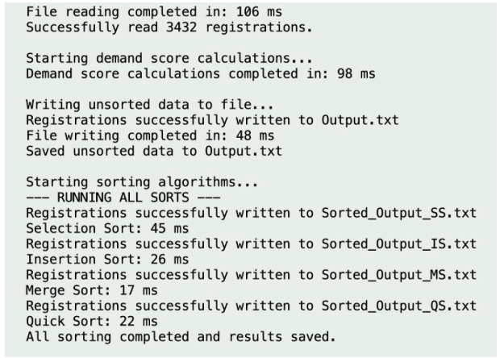

Appendix C — Runtime Output Screenshots¶
This appendix presents runtime screenshots captured during execution of the
CS210 Project — Student Course Registration Analysis.
Each screenshot documents a specific stage of program execution, from input validation to sorting performance benchmarking.
1. Full Run Validation¶
View Screenshot — Full Run Validation
Displays validation of input data and confirmation that
3432 registration records were successfully read.

2. Full Program Run¶
View Screenshot — Full Program Execution
Shows the complete execution flow, including:
- File reading
- Demand score calculation
- Writing results
- Running all sorting algorithms

3. Results Summary¶
View Screenshot — Runtime Summary
Summarizes measured runtimes of all sorting algorithms.

4. Reading & Writing Stage¶
View Screenshot — Reading and Writing Runtime
Demonstrates runtime measurement for file input and output operations.

5. Demand Score Processing Stage¶
View Screenshot — Demand Score Computation Runtime
Illustrates time required for computing demand scores.

6. Sorting Algorithms Runtime Comparison¶
Selection Sort¶
View Screenshot — Selection Sort Runtime

Insertion Sort¶
View Screenshot — Insertion Sort Runtime

Merge Sort¶
View Screenshot — Merge Sort Runtime

Quick Sort¶
View Screenshot — Quick Sort Runtime

Validation Summary¶
These screenshots confirm:
- Successful validation and loading of 3432 records
- Correct demand score computation
- Accurate sorting using four algorithms
- Reliable runtime measurement and benchmarking
The results demonstrate correctness of implementation and consistency between theoretical expectations and measured performance.